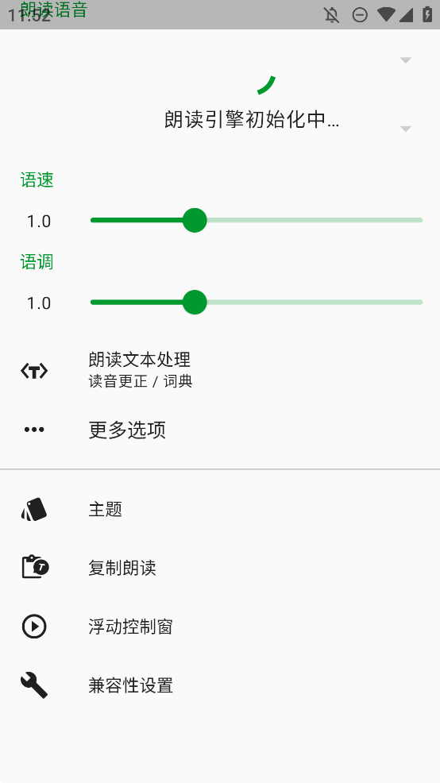
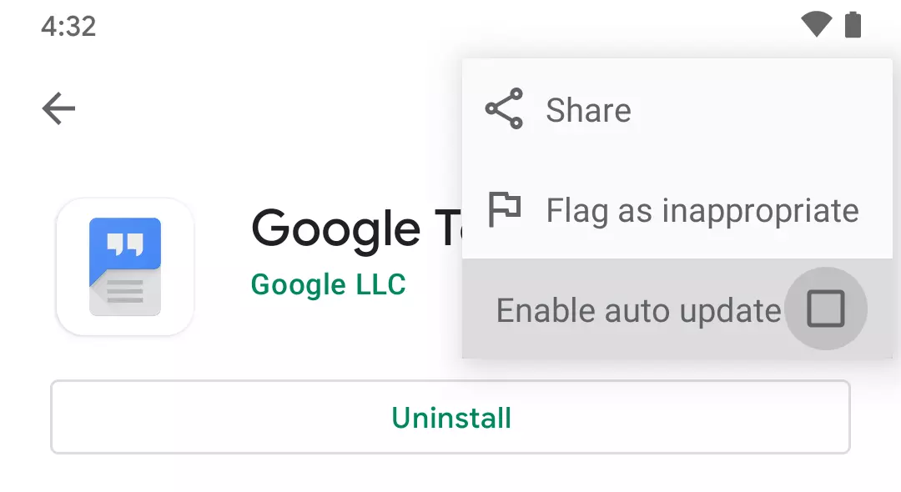

通勤路上的听书链 — 我用 T2S 把微信收藏变成了随身有声库
每天收藏文章攒了几百篇没读完，试过各种方法都绕不开"手动复制粘贴导出音频"这一步。T2S 插进流程之后，整个链路从三四次手动操作砍到了一次。
旧流程：每天三次手动复制，攒了半年的收藏还是零
我是那种刷微信公众号看到好文章就点「收藏」的人。半年下来收藏夹里堆了三百多篇，真要打开逐字读——白天坐地铁、等开会、排队吃饭，这些碎片时间眼睛盯屏幕太费眼，根本看不完。
试过的办法不少：用微信自带的朗读，声音僵硬像机器人，而且关掉微信就停了；把文章复制到笔记 App 里慢慢看，复制本身就是一道坎，长文还要分段；找专门的导出工具存成 TXT，再用别的朗读 App 导入……最后都卡在同一个地方——手动复制 + 格式转换 + 导入另一个 App，三步下来通勤早就过了。
更烦的是，导出成 MP3 的流程通常是：先把文字粘到朗读 App → 选引擎 → 点播放 → 等它读完 → 再点导出。整个过程要盯着屏幕，一旦锁屏就打断，根本没法单手操作。
新流程：T2S 插进两个环，整条链就通了
这条链其实只需要 T2S 干两件事——去 T2S官网 看一下功能列表就能理解它的定位——剪贴板监听和后台朗读/导出。我把它嵌到日常流程里是这样的：
起点：微信收藏 → 浏览器复制 → 剪贴板浮动按钮 → 直接朗读 / 一键导出 MP3 → 扔到云盘
每个环节具体怎么接：
- 微信里点收藏的文章，右上角浏览器打开（这步是必须的，因为微信自己不让外部 App 拿到正文）；
- 在浏览器里长按选中正文，整段复制；
- T2S 的剪贴板浮动按钮自动出现在屏幕边缘——点一下，立刻开始朗读；
- 如果听完觉得值得存，进 T2S 主界面选「导出音频」，等朗读过程走完（可以锁屏），MP3 直接存到下载目录；
- 最后一步手动把 MP3 拖进坚果云或者直接发到自己的微信文件传输助手——这步我目前还没自动化，但也不急，攒个五六条一起传。
整个流程里，T2S 负责的就是中间那段"复制完直接读 + 想存就导出"，两边的微信和云盘都是现成工具，不需要任何中间件。

实操细节：最容易断的两个环节
第一环：剪贴板按钮不出来怎么办
这是我踩过最多坑的地方——去 T2S文档 翻了一下才发现它默认是关的，开了之后还要过两关权限：
悬浮窗权限（SYSTEM_ALERT_WINDOW）和后台运行白名单。
装好 T2S 之后（安装包直接从官方下载拿），第一步在 T2S 设置里打开「剪贴板朗读」开关，它会自动跳系统设置页让你开悬浮窗。这步一般没问题。
第二步看手机品牌。我用的是小米，MIUI 默认会杀后台——电池优化里必须把 T2S 设为「无限制」，否则复制完按钮偶尔会不出。华为和 OPPO 的用户同理，EMUI 和 ColorOS 都有各自的后台管理策略，不设白名单的话剪贴板监听会被静默杀掉。
如果是 Android 13 以上，首次启动还会弹通知权限申请，也一起勾了。
我把这些设完之后，浮动按钮就稳定了——复制后延迟 1 秒出现（在 T2S 设置里可以调，我设了 1 秒防止误复制就弹），拖到屏幕右下角不挡内容，点一下直接开始朗读。
第二环：引擎选不对，导出的音频听不下去
T2S 本身不产生声音，它是个文本输入输出层，真正的语音合成来自系统里安装的 TTS 引擎。这意味着引擎选得好不好，直接决定了朗读的自然度。
我走过的弯路：一开始没装任何引擎，用的是小米自带的"小爱语音"——声音像读稿机器人，长句断句全错；后来装了 Google 语音服务，中文朗读立刻自然了，但发现中文音色只有一两个；再后来搭配了 MultiTTS 引擎，选了个女声主播，导出的 MP3 已经接近真人播客的感觉。
现在的配置是：
- Google 语音服务装着当兜底（英文内容和系统其他朗读需求用它）；
- T2S 设置里「朗读引擎」选 MultiTTS，锁定一个中文女声；
- MultiTTS 里只保留这一个主播（试过同时开多个音色，T2S 会按段落切换声音，听着跳戏）。
切换引擎的入口在 T2S 设置 → 朗读引擎，这个选择只影响 T2S 自己，不会改系统默认——这一点很重要，我不想装了新引擎之后连系统导航的语音都变了。

效果与边界：省了两次手动复制，但也别硬套
量化一下这条链省了什么：以前读一篇收藏文章，最少要手动复制两次（一次粘到朗读 App、一次粘到笔记存着），还要中间开至少三个 App。现在整条链在浏览器和 T2S 两个 App 里就完了，浮动按钮出现的瞬间就是朗读开始的瞬间——少了两次手动复制 + 少了三个 App 切换。
导出音频的收益更明显。以前用别的 App 导出，要盯着屏幕等，T2S 的后台朗读/导出是真后台——锁屏之后继续，跑完自动生成 MP3 扔到 Download/T2S/ 下面，我每次攒个五六条一起传云盘，平均花三分钟。
但这条链也有边界，不是什么内容都适合套：
- 超过 2 万字的长文不要直接扔进去——T2S 读 TXT 没问题，但导出 MP3 需要完整朗读一遍，两万字大概要 40 分钟，中间不能断。长文我会先在浏览器里分成几段复制；
- PDF 和 ePub 格式的电子书暂时不进这条链，文件格式解析比 TXT 复杂，导出前还要做格式转换，反而多一步。电子书我单独用别的工具处理；
- 敏感信息别开剪贴板监听——T2S 的设计是只在触发复制时读取、不持续扫描，但如果复制的是密码或者银行卡号，还是先把 Copy-to-Speak 开关关掉。这是隐私层面的事，操作上就是一个开关，一秒就能切。
还有一点值得提：T2S 的文本处理全在本地，不上传服务器。这对我来说很重要——收藏里偶尔有内部文档的片段，不想让第三方服务看到。
收尾
这条链跑了快两周，收藏夹从 300 多篇降到了 240 篇，通勤路上的碎片时间终于不浪费了。如果有人也像我一样收藏了一堆东西没读完，我会推荐先从最简单的环节接入——装 T2S、开剪贴板浮动按钮、配好 MultiTTS 引擎——这三步做好了，整条链的 80% 收益就已经拿到。
这套资料在三个仓库都能拿到——GitHub 上有完整的文档源码、国内网络不稳的可以直接看 Gitee 镜像、GitCode 上也备了一份——想折腾的话可以自己去翻。